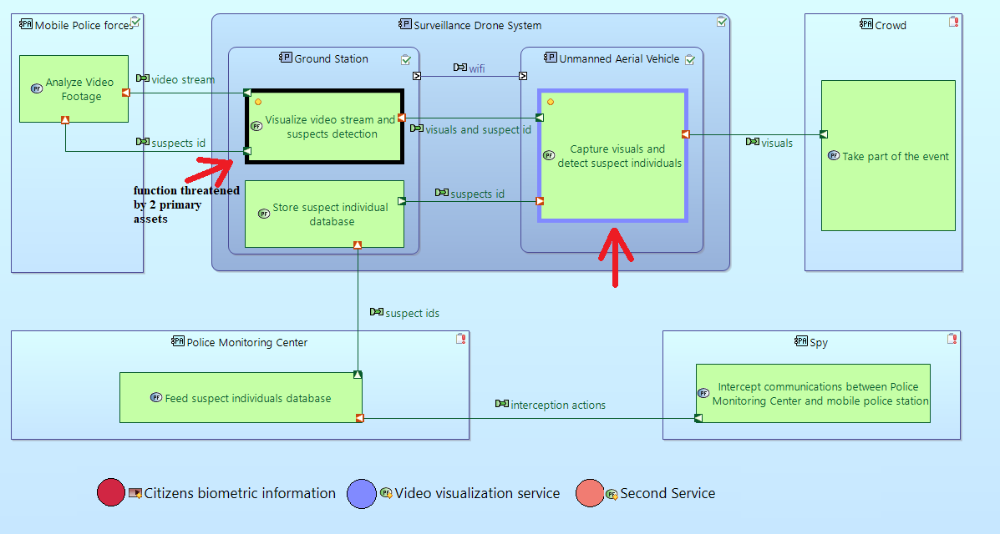

DARC Viewpoint is installed as viewpoint on Capella to manage Cybersecurity and Threats Modeling in relation with Arcadia methodology.
The intent of this viewpoint is to support effective co-engineering between systems and cybersecurity engineering teams when performing the following tasks:
Cybersecurity Specific Properties of Model Elements can be seen in the Cybersecurity tab of the Properties View. This section lists the most important concepts and their properties.
An Actor is involved in Threats and allocates one or more Functions.
| Threat Source | Someone or something that could affect the product. | Yes/No |
| Threat Source Profile | Type of threat source. | 1 to 5 |
| Trusted | Ability to be relied on as honest or truthful. Threat Source = Yes => Trusted = false. | Yes/No |
| Rationale | Rationale on the cybersecurity attributes. The trustworthiness of an Actor is absolute, it does not depend on the Threat that the Actor is involved in, or a given security property. Details on this aspect and others can be exposed in this Rationale field. | Text |
An Entity is involved in Threats.
| Threat Source | Someone or something that could affect the product. | Yes/No |
| Threat Source Profile | Type of threat source. | 1 to 5 |
| Trusted | Ability to be relied on as honest or truthful. Threat Source = Yes => Trusted = false. | Yes/No |
| Rationale | Rationale on the cybersecurity attributes. The trustworthiness of an Entity is absolute, it does not depend on the Threat that the Entity is involved in, or a given security property. Details on this aspect and others can be exposed in this Rationale field. | Text |
A situation that is unwanted by the stakeholders and that is to be avoided. Threat is an abstract concept that is concretized by the following kinds of attacks (by default):
| Eavesdropping | Secretly listening to the private conversation of others without their consent. |
| Theft | Stealing, leaking data, attack against traceability or against rogue action detection. |
| Data alteration | Modifying data, erasing data. |
| Denial of Service | DoS attacks make a machine, a service or a network resource unavailable to its intended users. |
| Intrusion | Entering an information system without permission. |
| Tampering | Tampering attacks refer to many forms of sabotage (intentional modification of the information system in a way that makes them harmful). |
Threat kinds can be customized by the user in the Cybersecurity Configuration, by editing the Threat.Kind type.
The threat kinds can be updated as below:
Threats are applied to Primary Assets and are similar to the Capabilities from Capella. Under a Threat, the user can do the same operations as to an Operational Capability/Capability/Capability Realization:
A Threat has the following additional attributes:
| Level | Priority level given to a Threat at a given stage of design process. It can be motivated by cybersecurity risk analysis; e.g. may be an indication of the likelihood of threat scenarios and the impact of the feared event associated to the threat. | 1 to 5 |
| Rationale | Rationale on the cybersecurity attributes. | Text |
Additionally, like Primary Assets, Threats can also define and customize Security Needs (see next section).
Information, activity, process or functionality that is valuable for the customer and then needs to be protected. The DARC Viewpoint distinguishes between:
| Functional Primary Asset | Activity, process or functionality that is valuable for the customer and then needs to be protected. | Functions and Functional Chains |
| Information Primary Asset | Information that is valuable for the customer and then needs to be protected. | Exchange Items |
The attributes of a Primary Asset are its corresponding Security Needs, i.e. the characteristics that can be compromised / affected by a threat and their sensitivity levels. The following characteristics are considered here:
By default, an asset can define a value between 0 and 3 for each of these attributes. Project/Product teams shall define the equivalences between these sensitivity levels and those specific to their standards framework. If this values are not suitable for the project, the user could customize (remove, add, rename) them from Cybersecurity Configuration located on the root Project element (see Capella Guide > Preferences > Project Explorer to reveal it).

Primary Assets are threatened by Threats.
Action, operation or service performed by the system, or by an actor interacting with the system (ref: Arcadia). Like Primary Assets and Threats, Functions can define values for Confidentiality, Integrity, Availability and Traceability.
| Data Storage | Indicates that the function represents a data storage functionality. | Yes/No |
| Remanent Data | Indicates that the function manipulates data in such a way that data (or parts of it) remains even after attempts have been made to remove or erase it. | Yes/No |
A Exchange Item describes a set of Data semantically coherent with regards to their usage in a given context: same communication principles, simultaneity of transportation, same non functional properties, indivisibility (an Exchange Item is monolithic). (ref. Arcadia) An Information Primary Asset references one or more Exchange Items. An Exchange Item can define values for Confidentiality, Integrity, Availability and Traceability.
The following diagram types are provided by the DARC Viewpoint:
The user can create a diagram using the menus in project explorer or using the corresponding hyperlink from the Activity Explorer (online documentation):

Threat diagrams are used to model System Threats, threatened Assets and Involved Actors/Entities:
Alternatively, select New Diagram/Table...->Threat Diagram on a component's context menu in the Capella Project Explorer.
The following tools are available:
| Threat |

|
Create a new Threat. |
| Functional Primary Asset |

|
Create a new Functional Primary Asset. |
| Information Primary Asset |

|
Create a new Information Primary Asset. |
| Actor |

|
Create a new Actor. |
| Involves |

|
Create a new Threat Involvement between the selected Threat and Actor. |
| Applicable to |

|
Create a new Threat Application between the selected Threat and Primary Asset. |
| Use |

|
Create a new Threat Source Use between the selected Threat Source Actor and Actor. |
| Threats |

|
Insert/Remove Threats. Create or delete graphical objects corresponding to already existing Threats. Removing a Threat graphical object from the diagram does not delete the Threat from the model. This tool does not modify the semantic model. |
| Functional Primary Assets |
|
Insert/Remove Functional Assets. Create or delete graphical objects corresponding to already existing Functional Assets. Removing a Functional Asset graphical object from the diagram does not delete the Functional Asset from the model. This tool does not modify the semantic model. |
| Information Primary Assets |
|
Insert/Remove Information Assets. Create or delete graphical objects corresponding to already existing Information Assets. Removing a Information Asset graphical object from the diagram does not delete the Information Asset from the model. This tool does not modify the semantic model. |
| Actors |
|
Insert/Remove Actors. Create or delete graphical objects corresponding to already existing Actors. Removing an Actor graphical object from the diagram does not delete the Actor from the model. This tool does not modify the semantic model. |
At Operational Analysis level, the following tools are also available:
| Operational Entity |

|
Create a new Operational Entity. |
| Operational Entities |
|
Insert/Remove Operational Entities. Create or delete graphical objects corresponding to already existing Operational Entities. Removing an Operational Entity graphical object from the diagram does not delete the Operational Entity from the model. This tool does not modify the semantic model. |
Threat diagrams have an optional layer named "Threat Level Decorations". When this layer is enabled, each Threat's level value is displayed in parenthesis on the up right corner of the Threat element:


Architecture Diagrams are extended Capella Architecture Diagrams. Thus, most of the tools available in Cybersecurity xAB diagrams are documented here (OAB, SAB (online documentation), LAB (online documentation), PAB (online documentation)).
One additional tool is provided by the Viewpoint:
| Primary Assets |
|
Insert/Remove Primary Assets. Create or delete graphical objects corresponding to already existing Primary Assets. Removing a Primary Asset graphical object from the diagram does not delete the Primary Asset from the model. This tool does not modify the semantic model.. When a Primary Asset is added to a diagram, its color is chosen randomly from a set of predefined colors. Node elements related to the asset will then receive an emphasized border that matches the color of the asset element. Related edges will change the color to the color of the asset element. |
Several Layers are provided for Cybersecurity xAB, xDFB, CDB and ES diagrams. A layer allows to change the presentation of a diagram in order to focus on specific aspects of the modeled system. Layers are activated in the diagram toolbar:

The Cybersecurity Decoration Layer adds the following decorations to existing diagram elements.
 Data Storage Data Storage
|
Indicates that the function represents a data storage functionality. |
 Trusted Actor Trusted Actor
|
Ability to be relied on as honest or truthful. |
 Untrusted Actor Untrusted Actor
|
Disability to be relied on as honest or truthful. |
 Remanent Data Remanent Data
|
Indicates that the function manipulates data in such a way that data (or parts of it) remains even after attempts have been made to remove or erase it. |
| ThreatSource | Someone or something that could affect the product. |
The Primary Assets Layer will display in the diagram the inserted assets. The elements that are threatened by them will be highlighted with the same border color as the asset color. If two or more assets threat the same element and at least two of them are displayed in diagram, the border color of the element will be black.

When the primary asset covers a functional chain, the involved functions and functional exchanges will be highlighted in the same way (if the primary asset is displayed). If FunctionalChains (FC) are displayed in diagram, they will override the colors of Primary Asset Layer!
Two tools are available in this layer, under the Cybersecurity section: Primary Assets and Threats. With Primary Assets Tool the user has the ability to show/hide Primary Assets (Functional and Information) in/from diagram. With Threats Tool the user can show/hide Threats in/from diagram.

The Supporting Assets Layer adds decorations to the Components, Component Exchanges and Physical Links of Primary Assets. It highlights the first node component/ actor and the first deploy behavior component that contains at least one function threaten by the primary asset. This components are highlighted with the color of the primary asset (if it's only one) or black (if there are two or many primary assets that cover the same function).
Additional layers are provided to focus on Confidentiality, Integrity, Availability and Traceability needs for model elements. When one of these layers is active, elements with a higher respective security needs value are emphasized over elements with a lower security needs value:

The Trust Boundaries Layer will change the diagrams appearance: Trusted components and actors will change their background color to white, untrusted components and actors will change their color to red. Communication edges between Trusted and Untrusted elements, so called Trust Boundaries, will be decorated with a small flame icon covered by a red border:

See Capella Exchange Scenario Documentation (online documentation).
See Capella Class Diagram Documentation (online documentation).
Cybersecurity model elements and their attributes and relationships are subject to certain constraints. These constraints can be verified by selecting Validate->Validate Model from any model element's context menu.